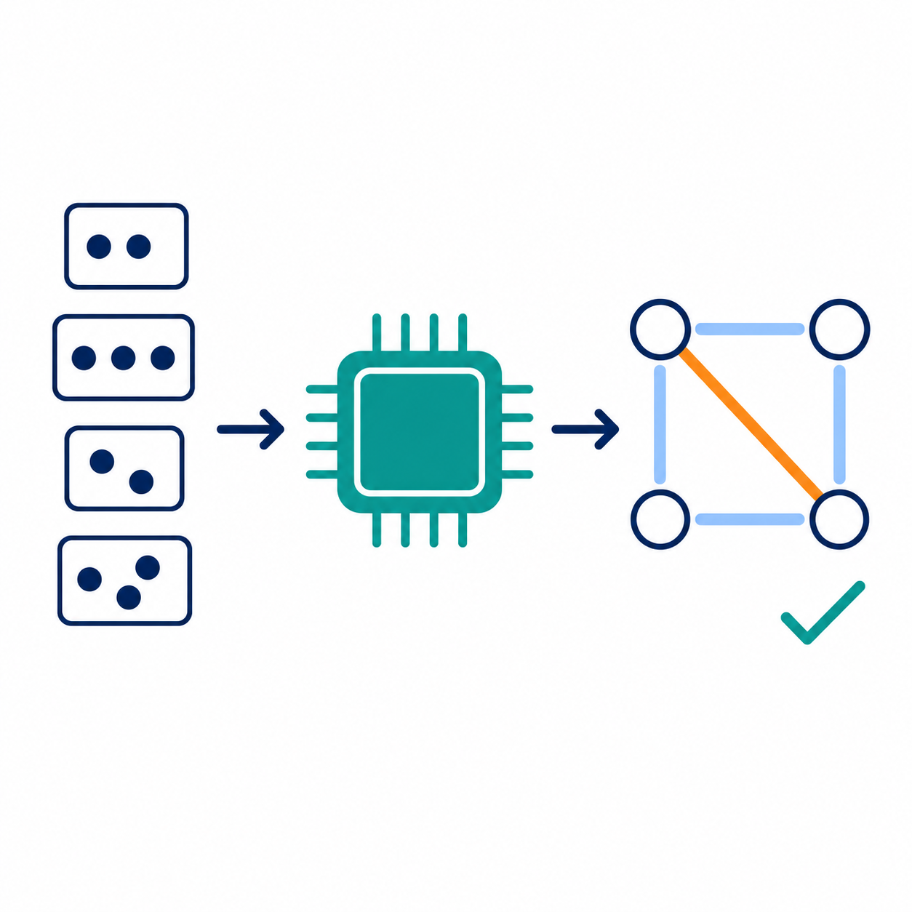

Characterizing Streaming Decidability of CSPs via Non-Redundancy
Amatya Sharma, Santhoshini Velusamy
arXiv preprint, 2026.
Characterizes the single-pass streaming complexity of CSP satisfiability, up to logarithmic factors, by the non-redundancy of the constraint language.